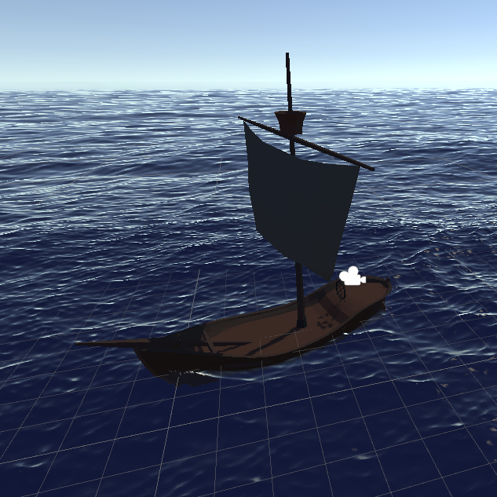
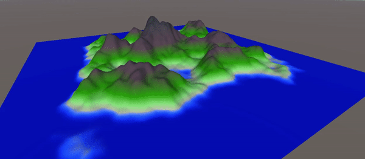

Exploring Virtual Reality
Another exciting project I have been working on is a sailing simulation in Virtual Reality, created with Unity as a Game Engine and Blender for my models and animations.

The biggest challenge was getting the waves to look and feel right. After a lot of fiddling around myself, lacking the satisfying results, I found an invaluable, royalty-free, Unity-plugin called Crest, which did a lot of the heavy lifting. What this uses, opposing to my own attempts using Perlin-Noise, are so called Gerstner-waves, which produce much more authentic results. More on this can be found here.
Another interesting part of this project was the generation of procedural islands. I will link the (german) documentation of the project here.